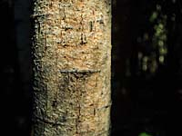

The trunk is the main stem of the tree. It has two main functions:
- support the crown of branches, twigs, and leaves
- transport food and water throughout the tree
The outer bark on the trunk protects the inside of the tree from injury and from drying out. It also acts as an insulator against cold and heat.
|
|
Tree trunks house an amazing system of pipelines.
|

|
Between the xylem and the phloem is a very thin growing layer called the cambium. Every year during spring and summer, new xylem and phloem cells are produced by this layer. As a tree grows, the older wood in the centre of the trunk ceases to carry sap. This inner wood, which is usually darker in colour than sapwood, is called heartwood.This yearly growth of wood appears as annual rings. Each annual ring is made up of a light and dark band of cells that correspond to the spring and summer growth. By counting these rings, you can determine the age of a tree.
Xylem and phloem are continually being made in new stem areas. Xylem cells are formed at the inner surface of the cambium. This tissue eventually forms the wood of an old stem. Phloem is formed at the outer surface of the cambium and makes up most of the bark of an old stem. Xylem and phloem contain fibre cells which form a tissue that strengthens the stem. Fibres and vascular cells can occur in bundles (fibrovascular bundles).
Xylem consists of two types of cells; tracheids and vessel elements.
a)Tracheids are dead when functioning and develop from single, elongated cells. Pits or holes occur along the walls of the tracheids. Usually, a tracheid will be paired with another so closely that only a single cell layer separates the two cells. This allows for the transfer of materials from one tracheid to the other.
b)Vessels are elongated, thick-walled cells joined end to end. These line up end to end, and, as in tracheids, become functioning when the living substance (protoplasm) inside the cell dies. These form tiny, elongated pipes throughout the stem, which transport water and minerals.
c)Phloem consists of sieve tubes and companion cells. Sieve tubes are elongated cells with small holes in their end walls. These cells, that lose their nuclei at maturity, line up end to end, and function with the help of companion cells. Companion cells are located beside each sieve-tube cell.